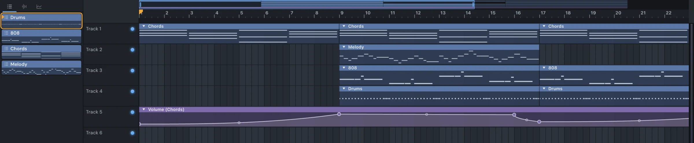

Make
Automation
An automation clip moves a control over time: a filter opening over eight bars, a fade-out at the end, a riser that speeds up. It's a curve that lives on the Playlist like any other clip, and the control follows it as the song plays. Almost every control can be automated: channel volume, pan and pitch, mixer faders, pans, sends and effect mixes, every knob of the built-in effects, your plugins' parameters, the main volume and the tempo.

Make an automation clip
There are a few ways in. All of them make the same thing.
From a knob or fader. Right-click it and pick Create automation clip.
From a built-in effect's window. Touch any control in it. Its window's title bar then shows Automate "…", with the name of what you touched. Click it.
From a plugin's window. Move a parameter in the plugin, then press Automate in the window's title bar.
From the Automate window. In the Playlist's Picker (⌥P), open the Automation clips tab and click Automate…. Type to find a control ("cutoff", "kick vol") or browse:
- what you last touched, in a plugin's window or anywhere else,
- the song: the main volume and the tempo,
- each channel: volume, pan and pitch,
- the mixer: the tracks something plays into and the master, with their volume, pan, stereo, sends, effect mixes and the built-in effects' controls,
- each plugin's parameters.
Wherever you start, the new clip:
- covers the Playlist's time selection if there is one, else the whole song (at least four bars),
- goes on a track below the others,
- starts flat, at the value the control has now,
- is selected, and the Playlist opens on it.
Shape the curve
Edit the curve right on its clip in the Playlist, with the Draw (P) or Paint (B) tool. Make the track taller if the clip is too thin to work on.
Right-click adds. Left-click moves. ⌥-click deletes.
- Add a point: right-click on the curve. Keep the button down to drag the new point into place. Hold ⇧ to add it on the line, keeping the value the curve has there.
- Move a point: drag it. Hold ⇧ to move it only along time, ⌘ only up and down, ⌥ to move it off the grid.
- Type a value: double-click a point.
- Delete a point: ⌥-click it.
- Bend a segment: drag the small ring between two points. Hold ⌘ to bend it finely. Right-click the ring to straighten it again.
The first point always sits at the clip's left edge. It can't be deleted.
Right-click a point for its menu: its value, its curve type, Type in value… (as a percentage of the clip's range), Reset tension, Delete and Automation settings….
Away from the points, the clip is still a clip. Drag its title, or its body with the left button (outside Step mode), to move it. Right-click its title to delete it. ⌘-click and ⌘-drag select, as on any clip.
Curve types
A point's curve type shapes the segment that arrives at it, from the point before. Right-click a point to pick one:
| Curve | Shape |
|---|---|
| Single curve | One bend, set by the ring |
| Double curve | An S: the first half bent one way, the second the mirror of it |
| Alt single curve | A single curve, bending the other way |
| Alt double curve | The other S: fast at the ends, slow through the middle, or the reverse |
| Hold | Stays where it was, then jumps at the point |
| Stairs, Smooth stairs | Steps from one value to the next, sharp or rounded |
| Pulse | Flips between the two values |
| Wave | Swings between the two values, arriving at the second |
| Half sine | Quick away, slowing to a stop as it arrives, like a tape stop |
| Smooth | Eases out and in, with no sharp corners |
For stairs, pulses and waves, dragging the ring sets how many steps or cycles there are.
A point you add takes the curve type of the segment it splits, so the shape carries on.
The first point has no curve type: nothing comes before it.
Step and Slide
Two buttons in the Playlist's toolbar change how a drag on a curve works.
- Step mode: dragging across a curve paints steps, one per grid cell, at the height of the pointer. It's the quickest way to draw a gated or stuttered pattern. Hold ⌥ to paint steps a step long, whatever the snap. Change the snap to change the cells.
- Slide mode: moving a point moves every point after it too, so the rest of the curve keeps its shape.
The automation clip's window
Double-click an automation clip, or pick Automation settings from its menu, to open its window. It says what the clip drives, and shows its curve.
Min and Max
MIN and MAX set the range the curve moves the control between. The top of the clip is MAX, the bottom MIN. Narrow them to keep a sweep subtle without redrawing it.
A new tempo clip goes from 60 to 180 BPM, widened if the song's tempo is outside that.
LFO
Turn on the LFO for an oscillator on top of the curve. The points stay as they are.
| Knob | What it does |
|---|---|
| SPD | How fast: from a cycle every sixteen bars up to 32 a bar |
| TENS | Its shape: towards a square one way, peakier the other |
| SKEW | Where in each cycle it peaks: in the middle it's a triangle, at either end a saw |
| LVL | How much, from −100% to +100% |
| MULT | On: the LFO scales the curve, as you'd want for a volume. Off: it's added to it, as for a pan. |
The dotted line is what you hear: the curve with the LFO.
Tools
The Tools menu, in the window and in the clip's menu on the Playlist:
- Flip vertically: the top becomes the bottom.
- Normalize levels: stretched so the lowest point is at the bottom and the highest at the top.
- Scale levels up (×1.25) and Scale levels down (×0.8): bigger or smaller moves, about the middle.
- Decimate points: every second point between the first and last goes.
- Smooth: each point between the first and last moves halfway towards its neighbours.
Each is one step of undo.
Copies share one curve
Copy an automation clip on the Playlist, by ⇧-dragging or ⌘B, and the copies all play the same curve. Change the curve on one and they all change. That's handy for a filter move that repeats every chorus.
To change just one, pick Make unique from its clip menu. It gets its own copy of the curve.
The Picker's Automation clips tab lists every automation clip in the song. Click one to make it what Draw and Paint add, and draw it wherever you need it. Deleting one there deletes all its clips.
Automate an audio clip's volume or pan
An audio clip's menu has Automate ▸ Volume and Automate ▸ Panning. Either makes an automation clip of its channel's volume or pan, covering that audio clip exactly, on the track below it.
For a quick fade, the audio clip's own fades and gain are often simpler.
Tempo automation
Right-click the tempo in the toolbar and pick Create automation clip, or find Tempo under Song in the Automate window. Draw the curve as you would any other. The song speeds up and slows down as it plays, and stretched audio clips keep time with it.
While a tempo clip plays, the tempo in the toolbar shows the tempo where the song is. What you type there is the song's own tempo.
When automation plays
Automation plays in song mode only. Press L or use the PAT / SONG switch. In pattern mode, every control is just its own value.
In song mode, a control is:
- before its first clip: its own value, as you set it,
- inside a clip: the curve. If two of its clips overlap, the one that starts later wins,
- after a clip: the clip's last value, until the next clip of it.
An automated control follows the curve wherever the song is, playing or not, so you see what you'll hear. It gets a small mark in the accent colour at its top right.
While you hold an automated control with the mouse, the automation leaves it alone. Let go and it follows the curve again.
A plugin's parameter is put back to its own value when the song stops.
Right-click an automated control to open one of the clips driving it (Edit and the clip's name), or to make another.
Things to know
- Automation clips are heard in exports exactly as in the Playlist.
- An automation clip whose control is gone (you deleted its channel or plugin) plays nothing. Its window says so.
- Modulators are the other way to move a control: they follow a sound or a channel's notes rather than a curve you draw. They're under Modulate in the same right-click menu.
Something here wrong or missing? Tell us.